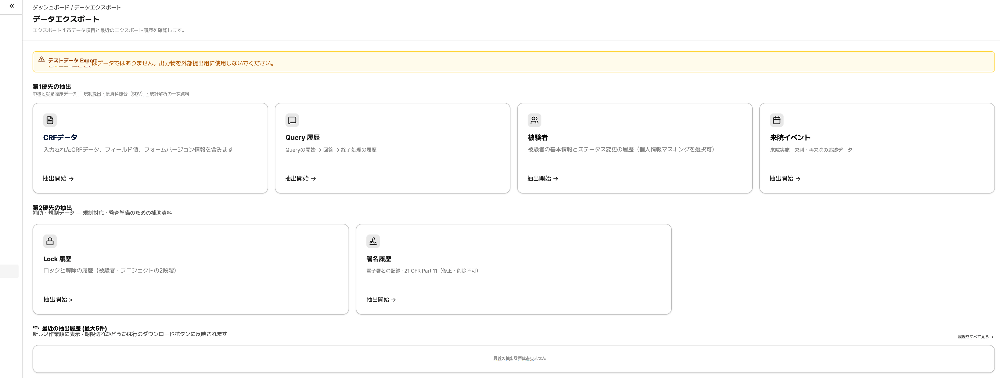
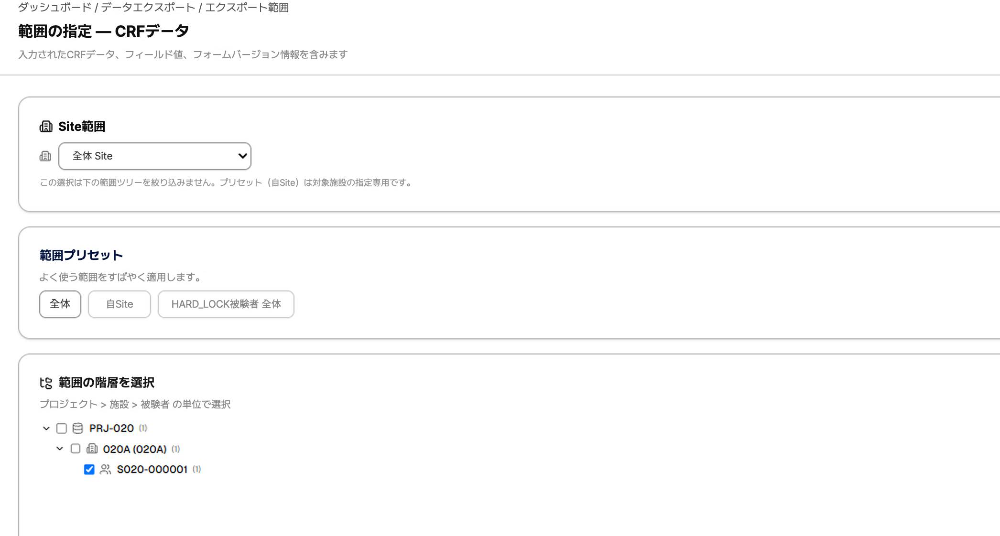
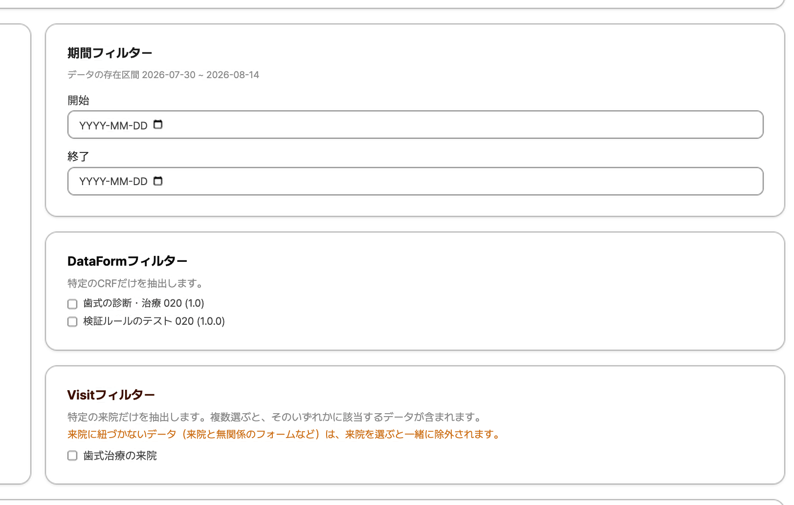
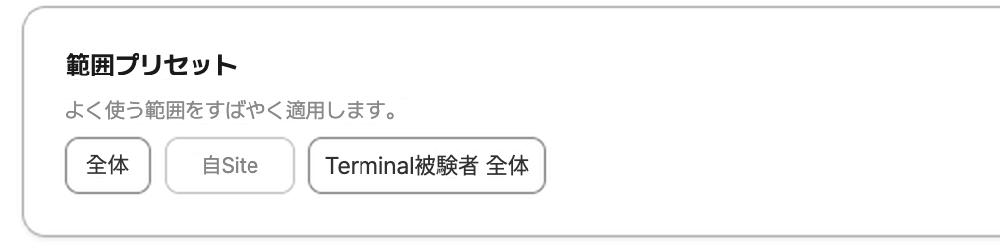
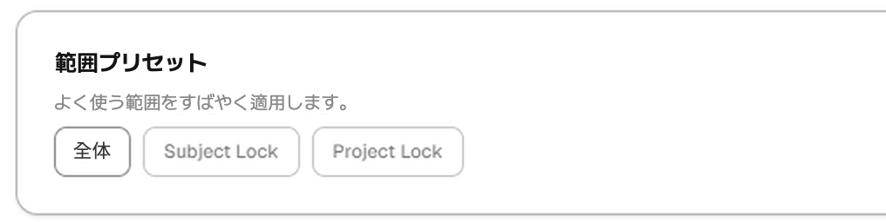
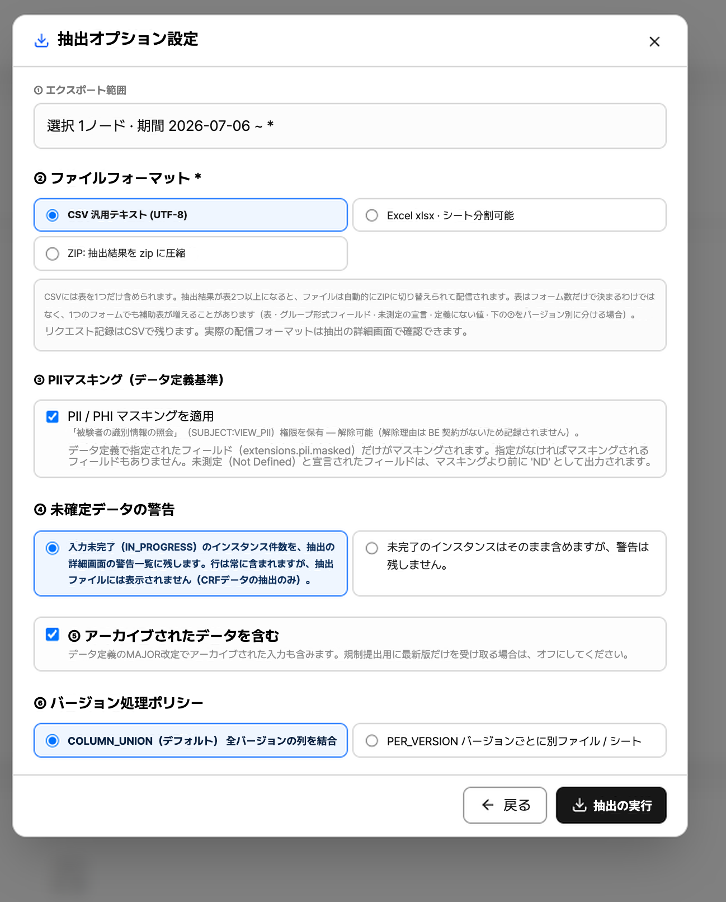
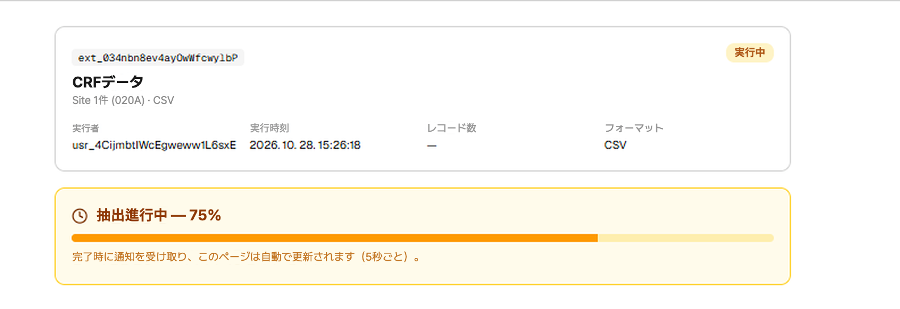
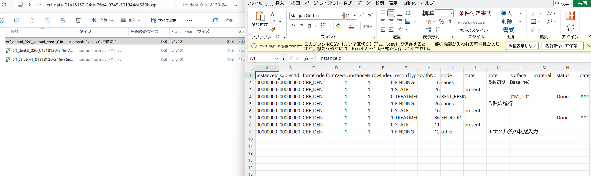

データエクスポート
SCR-EXP-001·002·003·006 · ハブ · 範囲の指定 · 抽出オプション · ダウンロード
データエクスポート
- 1.1画面構成
- 1.2範囲の選択
- 1.3フィルターと予想規模
1.1画面構成
概要
研究データをファイルで受け取る画面です。まず何を受け取るかをタイプで選び、その後に範囲とオプションを決める流れです。タイプは、規制提出にそのまま使える第1優先の4種と、監査対応の補助資料である第2優先の2種に分かれます。抽出は時間がかかる作業のため、依頼しておき、完了の通知を受け取る方式で動作します。
画面説明

抽出開始 → — そのタイプの範囲指定画面へ移動します 1.2。カードごとに1つずつあります。
履歴をすべて見る → — これまでの抽出作業をまとめて見られる画面へ移動します。ダウンロードできなかったファイルを探し直すときに使います。
移動経路はダッシュボード / データエクスポートです。
プロジェクト状態バナー — 今は「テストデータ Export … 出力物を外部提出用として使用しないでください。」と表示されます。運用が終わったプロジェクトでは緑色の「確定データ Export」に変わります。
第1優先の抽出 — 「中核となる臨床データ — 規制提出・原資料照合（SDV）・統計解析の一次資料」です。
カードの構成は、タイプ名 · 格納される内容 · 抽出開始です。どの資料が含まれるか、説明を先に読んでから選んでください（下表参照）。
第2優先の抽出 — 「補助・規制データ — 規制対応・監査対応の補助資料」です。
最近の抽出履歴（最大5件） — 新しい作業から表示され、期限が切れているかどうかは行のダウンロードボタンに反映されます。
まだ一度も抽出していない場合は、最近の抽出履歴なしと表示されて空の状態になります。
抽出タイプ6種
| 優先順位 | タイプ | 格納される内容 |
|---|---|---|
| 第1優先 | CRFデータ | 入力されたCRFデータとフィールド値 · フォームバージョン情報 |
| 第1優先 | Query 履歴 | Queryの開始 → 回答 → 終了処理の履歴 |
| 第1優先 | 被験者 | 被験者の基本情報とステータス変更の履歴 |
| 第1優先 | 来院イベント | 来院の実施 · 欠測 · 再来院の追跡データ |
| 第2優先 | Lock 履歴 | ロック · 解除の履歴（被験者 · プロジェクトの2段階） |
| 第2優先 | 署名履歴 | 電子署名の記録 · 21 CFR Part 11（修正・削除不可） |
注意事項
誤解しやすい動作
- • この画面に入れるのは、データ管理者と監査者だけです。研究責任者・研究看護師・臨床開発モニター・ワークスペース管理者には、左側メニューに表示されません。ただし、プロジェクトが終了した後も抽出は可能です — 提出・保管用の資料を作る必要があるからです。
1.2範囲の選択
概要
タイプを選ぶと、何を含めるかの範囲を決める画面が開きます。範囲は3つの方法で絞り込みます — Site範囲で機関を指定し、プリセットでよく使う組み合わせを一度に適用し、範囲の階層ツリーでプロジェクト · 機関 · 被験者を直接チェックします。画面の右側には、期間とフォームで絞り込むフィルターが続きます 1.3。
画面説明

Site範囲 — 対象の機関を選びます。この選択だけでは、下のツリーは絞り込まれません — プリセットの対象機関を決めるためのものです。
範囲プリセット — よく使う範囲を一度に適用します。タイプごとに構成が異なります 2.1 · 2.2。
範囲の階層ツリー — プロジェクト · 機関 · 被験者を直接チェックします。上位をチェックすると、下位も一緒に選ばれます。
範囲の指定 — タイプ名と、そのタイプに格納される内容がタイトルに表示されます。違うタイプに入ってしまっていないか、ここで確認してください。
Site範囲の案内 —「この選択は下の範囲ツリーを絞り込みません — プリセット（自Site）の対象機関指定専用です。」
プリセットの案内 —「よく使う範囲を素早く適用します。」
自Site が薄く表示されています — 上の Site範囲が全体 Siteのため、対象機関が決まっていないからです。機関を1つ選ぶと有効になります。
ツリーの案内 —「プロジェクト > 機関 > 被験者単位で選択」。タイプによっては機関単位までだけ選ぶ場合もあります 2.1。
項目名の横の括弧内にある数字は、その下に含まれる件数です。
注意事項
必須確認 データ破損 · フォーム完了不可
- • Site範囲を選ぶだけでは、範囲は絞り込まれません。その値は「自Site」プリセットが指す機関を決めるだけで、実際に抽出される対象は下のツリーでチェックしたものです。機関だけ選んでツリーを空のままにすると、何も抽出されません。
1.3フィルターと予想規模
概要
ツリーで選んだ範囲をさらに絞り込むフィルターが右側にあります。フィルターの構成はタイプごとに異なります — 期間フィルターはすべてのタイプに共通で、 DataFormフィルターとVisitフィルターは、該当する資料があるタイプにだけ表示されます。画面の下にある予想レコード数は、抽出する前に規模をあらかじめ計算して表示します。
画面説明


期間フィルター — 開始。空欄にすると最初からになります。
期間フィルター — 終了。空欄にすると最後までになります。
DataFormフィルター — 特定のCRFだけを抽出します。チェックしないと、すべてが含まれます。
Visitフィルター — 特定の来院だけを抽出します。複数選ぶと、そのうちいずれか1つにでも該当する資料が含まれます。
オプション設定へ → — 抽出オプションのウィンドウを開きます 3.1。
データの存在区間も併せて表示されます — その外側の日付を入れると結果が空になるため、この区間を見て決めてください。
DataFormフィルターの案内 —「特定のCRFだけを抽出します。」
Visitフィルターの赤い警告 —「来院に紐づいていないデータ（来院に関係ないフォームなど）は、来院を選択すると一緒に除外されます。」
予想レコード数 — Subject · レコード · CRFインスタンスの3つの数字で、抽出前の規模を示します。範囲を選ばないと計算されません。
キャンセル — 範囲の指定を破棄して戻ります。
注意事項
必須確認 データ破損 · フォーム完了不可
- • Visitフィルターをかけると、来院と無関係な資料も一緒に除外されます。画面が赤い文字で直接警告している内容です — 特定の来院だけを受け取ろうとすると、来院に紐づいていないCRFまで除外されることがあるため、提出用の抽出では、Visitフィルターを空欄のままにしておくほうが安全です。
タイプ別の範囲指定
- 2.1Query 履歴 · 被験者
- 2.2来院イベント · Lock · 署名
2.1Query 履歴 · 被験者
概要
範囲指定画面の見た目は、タイプが変わっても同じです。変わるのは範囲プリセット3種と右側のフィルター構成だけです。ただし、ステータスを基準に絞り込むプリセットは現在押せません — サーバー側の範囲契約にまだその条件がないため、押しても全体と同じ結果になってしまいます。誤った安心を防ぐために、無効にしてあります。
画面説明


Query 履歴 のプリセット — 全体 · OPEN + ANSWERED · CLOSEDのみ。後ろの2つはステータス基準のため、現在は無効です。未処理のQueryだけを受け取るには、ツリーで対象を直接選んでください。
被験者 のプリセット — 全体 · 自Site · Terminal被験者 全体。最後のものは使用できます — 終了ステータスで固定された被験者（スクリーニング失敗 · 早期終了 · 追跡喪失 · 死亡 · 研究終了）5種を一度に選びます。
タイプ別プリセットと使用可否
| タイプ | プリセット3種 | 使用可否 |
|---|---|---|
| CRFデータ | 全体 · 自Site · HARD_LOCK被験者 全体 | すべて使用可能 |
| Query 履歴 | 全体 · OPEN + ANSWERED · CLOSEDのみ | 後ろの2つは無効 |
| 被験者 | 全体 · 自Site · Terminal被験者 全体 | すべて使用可能 |
| 来院イベント | 全体 · 自Site · 予定来院のみ | 最後の1つは無効 |
| Lock 履歴 | 全体 · Subject Lock · Project Lock | 後ろの2つは無効 |
| 署名履歴 | 全体 · DataInstance 署名 · DataLock 署名 | すべて使用可能 |
注意事項
誤解しやすい動作
- • 薄く表示されたプリセットは故障ではありません。押したときに全体と同じ結果になると、フィルターがかかっていると誤解されるため、あえて押せないようにしてあります。ボタンの上にマウスを重ねると理由が表示されます。その条件で絞り込みたい場合は、現時点では範囲の階層ツリーで直接選ぶ方法を使ってください。
2.2来院イベント · Lock · 署名
概要
第2優先のタイプと来院イベントのプリセットです。署名履歴だけは、プリセット3種がすべて使える一方、来院イベントとLock履歴はステータス基準のプリセットが無効です。タイプが違ってもSite範囲 · 範囲の階層ツリー · 期間フィルター · 予想レコード数の位置と使い方は同じです 1.2 · 1.3。
画面説明



来院イベント — 予定来院のみが無効です。予定来院だけを受け取るには、右側のVisitフィルターで来院を直接選んでください。
Lock 履歴 — Subject Lock · Project Lockのどちらも無効です。2段階を分けて受け取ることはできないため、全体で受け取ってから、ファイルで区別してください。
署名履歴 — DataInstance 署名（データ署名）とDataLock 署名（ロック署名）のどちらも使用できます。署名の種類を分けて受け取るときに使います。
タイプによって異なること · 同じこと
- • 異なること — 範囲プリセット3種 · 右側のフィルター構成 · ツリーで選べる単位
- • DataFormフィルター はCRFデータにだけあります
- • Visitフィルター はCRFデータと来院イベントにだけあります
- • 被験者 は、ツリーを機関単位までだけ選びます（被験者情報そのものが抽出対象）
- • 同じこと — Site範囲 · 範囲の階層ツリー · 期間フィルター · 予想レコード数 · 下部ボタン
注意事項
誤解しやすい動作
- • Lock履歴は段階を分けて受け取ることができません。被験者のロックとプロジェクトのロックを分けて欲しいという要望は、現在のプリセットでは処理されないため、全体で抽出してから結果ファイルで区別してください。抽出そのものは正常に行われます。
オプションと実行
- 3.1抽出オプション設定
- 3.2抽出の進行中
- 3.3抽出完了とダウンロード
3.1抽出オプション設定
概要
範囲を決めたあとにどのように書き出すかを決めるウィンドウです。項目には番号が付いているので、上から順に確認すれば十分です。既定値のままでも抽出できますが、規制提出用であれば、③ マスキングと⑤ アーカイブデータ含む を必ず確認してください。
画面説明

② ファイルフォーマット — CSV（カンマ区切りテキスト）· Excel（シート分割可能）· ZIP（結果を圧縮）の3種です。
③ PIIマスキング — 被験者を識別できる値を隠します。権限がない場合はオンのまま固定されます。
④ 未確定データの警告 — まだ入力が終わっていない資料が含まれたときに、警告を表示するか警告を省略するかを選びます。どちらの場合も行は必ず含まれ、変わるのは警告を残すかどうかだけです。
⑤ アーカイブされたデータを含む — フォームが大きく改訂されて保管処理された過去の入力まで含めます。規制提出用に最新版だけを受け取る場合は解除してください。
⑥ バージョン処理ポリシー — フォームのバージョンが混在する場合、COLUMN_UNION（すべてのバージョンの列をまとめて1つの表に）とPER_VERSION（バージョンごとに別ファイル・シート）から選びます。
抽出の実行 — 抽出を依頼し、進行画面へ移動します 3.2。
① 書き出し範囲 — 前の画面で決めた範囲が要約されて表示されます。ここでは変更できません。
閉じる — オプションのウィンドウだけを閉じます。範囲の指定画面はそのまま残ります。
フォーマットの案内 — 表が2つ以上あれば、CSVでも自動的にZIPにまとめられて配信されます。依頼の記録にはCSVとして残り、実際に配信された形式は完了画面で確認します。
マスキングの案内 — 権限がない場合は「マスキングが強制されます（変更不可）」、権限がある場合は「解除可能」と表示されます。解除の理由は記録されません。
アーカイブの案内 —「規制提出用に最新分だけを受け取る場合は解除してください」
← 戻る — 範囲の指定画面に戻ります。設定したオプションは保持されます。
注意事項
必須確認 データ破損 · フォーム完了不可
- • 圧縮（ZIP）には、CRFの添付ファイルの実体は含まれません。表には添付の識別子だけが載るため、規制提出に添付の原本が必要な場合は、別の手続きで収集してください。
- • マスキングの解除は役割ではなく権限で決まります。被験者の識別情報を照会する権限を持つユーザーだけがオフにでき、監査者にはその権限がありません。また、解除の理由は記録されないため、識別情報が入ったファイルを作るときは、誰が・なぜ受け取ったのかを研究チーム内部の手続きで別途残してください。
3.2抽出の進行中
概要
抽出を実行すると、作業画面へ自動的に移動します。抽出はサーバーで処理されるため、すぐには終わりません。この画面は5秒ごとに自分で更新し、進捗を表示します。画面を閉じても作業は続きます — 完了すると通知が届き、後で抽出履歴から改めて探せます。
画面説明

抽出の進行中 — N% と進捗バーです。
バーは、サーバーが報告した進捗をそのまま表示します。
案内文 —「完了時に通知を送信し、このページは自動で更新されます（5秒周期）。」自動更新が途切れると、中断された状態であるという文言に変わります。
作業番号 — ext_ で始まります。お問い合わせの際は、この番号をお知らせください。
実行中バッジ — 完了すると完了に変わります 3.3。
抽出タイプと範囲の要約です —「Site 1件（020A） · CSV」
実行者 · 実行時刻 · レコード数 · フォーマット。レコード数は終わるまで—です。
注意事項
誤解しやすい動作
- • 画面を閉じても抽出はキャンセルされません。待たずに別の作業をしても構わず、完了すると通知が届きます。通知を見逃した場合は、データエクスポート画面の最近の抽出履歴、または履歴をすべて見るで同じ作業番号を探して、ダウンロードしてください。
3.3抽出完了とダウンロード
概要
抽出が終わると、同じ画面が完了の状態に変わります。ファイルはサーバーに永久保存されず、有効期限があります — 期限が過ぎたら、もう一度抽出する必要があります。完了画面には、抽出の過程で生じた警告と、ファイルが壊れていないかを確認できる完全性検証値が一緒に表示されます。
画面説明

ダウンロード — ファイルをダウンロードします。
同じオプションで再実行 — 同じ範囲・オプションで、もう一度抽出します。有効期限が過ぎたときに使います。
完了バッジ — 進行中は実行中でした。
ファイル名 — 作業番号が入っているため、履歴と照合できます。
サイズ · レコード数 · フォーマット。フォーマットがCSV → ZIPになっているのは、表が2つ以上あったため自動でまとめられたからです 3.1。
有効期限 — この時刻を過ぎると、ダウンロードリンクは期限切れになります。
抽出警告 N件 — 抽出は成功したものの、知っておくべき点があるという意味です。マスキング対象がなかった · 入力が終わっていない資料が含まれた · 表が複数あったため圧縮した、などの内容で、サーバーが送った文章をそのまま表示します。
完全性検証（SHA-256） — 開くとファイルの指紋値が表示されます。ダウンロードしたファイルが転送中に壊れていないかを照合するときに使います。
抽出タイプと範囲の要約 — 進行中の画面と同じ位置にあります。
注意事項
必須確認 データ破損 · フォーム完了不可
- • 抽出警告を読まずに提出しないでください。警告は失敗ではありませんが、入力が終わっていない資料が混ざっていることや、マスキングが実際には適用されていないことを知らせる場合があります。規制提出用の抽出であれば、警告をすべて確認し、必要に応じて原因を直してから、もう一度抽出してください。
結果物
- 4.1ダウンロードしたファイル
4.1ダウンロードしたファイル
概要
ダウンロードしたファイルを開いた様子です。この画面はシステムの画面ではなく、ダウンロードした後の結果物を示します。表が複数ある場合はZIPの中に表ごとにCSVが1つずつ入り、ファイル名に作業番号が含まれているため、どの抽出から出たものかを確認できます。
画面説明

ZIPのファイル名には作業番号が入っています — 完了画面の番号と同じです 3.3。
圧縮ファイルの中には、表ごとにCSVが1つ入っています。主要な表のほかに、下位の表も別に分かれます。含まれるのは表だけで、CRFに添付されたファイル自体は含まれません（3.1の注意事項を参照）。
Excelで開くと「データが失われる可能性がある」という案内が表示されます — CSVの特性であり、元のファイルはそのままです。編集して保存するときだけ注意してください。
1行目は列名です — インスタンス · 被験者 · フォームコード · フォームバージョン · 回次 の順に始まり、その後に入力値の列が続きます。
2行目以降が実際のデータです。1行が記録1件になります。
注意事項
必須確認 データ破損 · フォーム完了不可
- • CSVをExcelでそのまま保存しないでください。Excelが長い数字を指数表記に変えたり、先頭の0を消したりするなど、値を変えて保存する場合があります。内容を確認するだけで閉じるか、加工が必要な場合は原本を別に保管したうえで、コピーを使って作業してください。規制提出には、ダウンロードした原本を使用します。